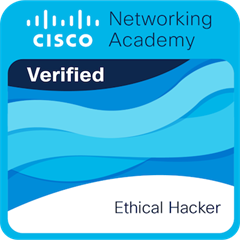
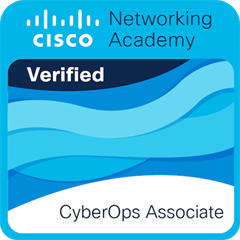

The person behind every report
Fieldnote Security is one person - not an agency, not an automated pipeline. Here's the background behind the review.
I'm Kiet. I run Fieldnote Security as a one-person practice: I run the scan, I review the output, and I'm the one who sends you the report - there's no queue, no junior analyst, no automated summary generator in between.
9+ years across roles including Production Manager, UAT Tester, Senior Test Analyst, Software Tester, and QA Tester - working closely with development teams before moving into Cyber Security in 2024. That's not a security title, and I won't pretend it is. What it gives me is time spent inside live, production-scale systems: enough to know that an open port or a missing header means something different depending on what's actually running behind it.
The security side is deliberate and ongoing: Cisco CyberOps Associate and Cisco Certified Ethical Hacker certifications, and an MSc in Cyber Security at the Open University, currently in progress.
Why the manual review matters: a scanner reports everything it finds, with no sense of which findings are routine and which are actually dangerous for your specific setup. Left as raw output, that's noise - and noise either gets ignored or wastes your time chasing the wrong thing first. Reviewing every result myself is how that gets filtered down to what's real and what to fix first.
Credentials
Cisco CyberOps Associate
SOC operations, security monitoring, and incident detection and response fundamentals.
Cisco Certified Ethical Hacker
Offensive security methodology - the same attacker's-eye mindset used to prioritize which findings in your report actually matter.
MSc Cyber Security - Open University (in progress)
Covering SIEM and SOC operations, cryptography, malware and incident response, and penetration testing - the formal grounding behind every review.
9+ Years Across Testing & QA Roles
Production Manager, UAT Tester, Senior Test Analyst, Software Tester, and QA Tester roles working closely with development teams, before transitioning into Cyber Security in 2024.
Certifications

Cisco Certified Ethical Hacker (CEH)
Validates offensive-security methodology - the attacker's-eye mindset used to find and prioritize what's actually exploitable in your environment.

Cisco CyberOps Associate
Validates SOC-level operational skills - monitoring, detecting, and responding to live security incidents, the same fundamentals behind reviewing every scan result personally.